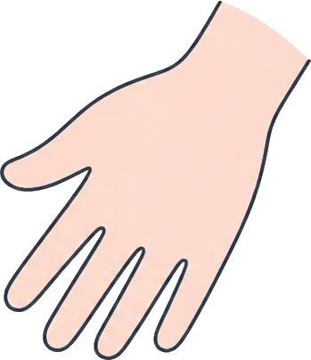

Outline
開催のご案内
- 日時
- 毎月第2日曜 10:00–11:30（9:50から入室できます）
- 場所
- オンライン（Zoom）
- 対象
- 家族の介護をしている方・してきた方
（親・配偶者・きょうだい・子どもなど、相手は問いません） - 参加費
- 無料
- 申し込み
- 不要。参加用のURLは、開催1週間前に会員向けメール（登録無料）でお届けします
- 進行
- 世話人が1〜2名入ります。1回の参加はおおむね8〜12名です
- 毎月
第2日曜 - 参加費無料
- オンライン
- 申込不要
Flow
当日の流れ
90分のあいだ、話す順番と時間の目安だけ決めています。
内容の決まりはありません。
10:00
はじめのあいさつ
世話人から、その日の進め方と約束ごとをお伝えします。
10:10
ひとことずつ近況
ニックネームと、この1か月のことをひとこと。話したくなければパスで大丈夫です。
10:30
話したい人から話す
テーマは決めません。1人の持ち時間はおよそ10分。聞く側は、途中で口をはさまずに聞きます。
11:20
ふりかえり・おわり
今日聞いて残ったことを、ひとことずつ。時間どおりに閉じます。
Our promise
つどいの約束
- ここで聞いた話は、ここに置いていくだれが何を話したかを、外で話題にしません。録画・録音・画面の撮影もお断りしています。
- 話したくないときは、パスしていい聞くだけの日があってもかまいません。
- 助言より先に、まず聞く「こうすればいい」は、相手から聞かれたときだけにしています。
- 介護のかたちを比べない介護の長さや重さで、しんどさの大きさは決まりません。
- 勧誘や営業はしない商品・サービス・宗教・政治などのお誘いはご遠慮ください。
For first-timers
はじめての方へ
はじめての日は、だれでも緊張します。最初の何回かは、カメラをオフにして聞いているだけの方がほとんどです。
話すことが決まっていなくても大丈夫です。「今日は何を言えばいいかわからない」と言ったところから、ゆっくり話がはじまることもあります。
Zoomの使い方がわからないときは、開催前の週にお電話で接続の練習ができます。お問い合わせフォームか、お電話でお知らせください。
- カメラオフ・ニックネームで参加できます
- 途中参加・途中退出も自由です
- スマートフォンからもつなげます
- 接続の練習（お電話・約15分）を受けつけています
Other gatherings
ほかの集まり
オンラインのほかに、顔を合わせる場と、
若い世代のための時間もひらいています。
対面のつどい
お茶を飲みながら、同じ机を囲んで話す回です。
- 日時
- 偶数月の第4土曜 13:30–15:00
- 会場
- 佐鳴台コミュニティ棟 2F 交流室
- 参加費
- 500円（お茶とお菓子代）
- 定員
- 先着12名・申込不要
ヤングケアラーの相談時間
10代・20代で家族の世話をしている人のための時間です。話す相手は、同じ経験のある世話人です。
- 日時
- 毎月第4水曜 19:00–20:30
- 場所
- オンライン（Zoom）
- 参加費
- 無料
- 申し込み
- 前日までにフォームから（1人30分程度）
ケアラーカフェ「はなしの持ちより」
年に2回、テーマをひとつ決めて話す少し長めの会です。介護を終えた方の参加も多い回です。
- 時期
- 5月・11月（日程はイベントページでお知らせ）
- 会場
- 佐鳴台コミュニティ棟 2F 交流室
- 参加費
- 500円
出張講座
中学・高校、地域の集まり、企業の研修などにうかがい、ケアラーやヤングケアラーについてお話しします。
- 時間
- 50分〜90分（ご相談に応じます）
- 地域
- 浜松市と近隣の市町
- 費用
- 講師の交通費のみ（学校は無料）
FAQ
よくあるご質問
いま介護をしていなくても参加できますか？
参加できます。介護を終えた方、これから介護がはじまりそうな方もいらっしゃいます。お仕事で介護に携わっている方は、ご家族の介護をされている立場でご参加ください。
浜松市の外に住んでいます。
オンラインのつどいは、お住まいの地域を問わず参加できます。対面のつどいも、市外からお越しいただいてかまいません。
顔や本名を出さずに参加できますか？
できます。カメラはオフのままで、表示名はニックネームでかまいません。
途中から入ったり、途中で抜けたりしてもいいですか？
どちらもかまいません。介護の都合で急に抜けることは、だれにでもあります。
話すのが苦手です。
聞くだけの参加も歓迎しています。順番がまわってきたら「パス」と言ってください。
介護の制度や手続きについて相談できますか？
世話人は介護の経験者で、専門職ではありません。要介護認定やサービスの利用については、お住まいの地域包括支援センターや市区町村の窓口へおたずねください。つどいでは、窓口に行く前の気持ちの整理をお手伝いできます。
参加用のURLはどうやって受け取りますか？
開催の1週間前に、会員向けのお知らせメールでお送りします。会員登録は無料で、お問い合わせフォームから申し込めます。
会員になると、何か決まりごとはありますか？
会費も、参加の義務もありません。月に1回お知らせメールが届くだけです。配信はいつでも止められます。